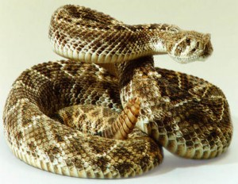

Cobra Rey
La serpiente más venenosa del mundo es La Cobra Rey, tiene a muchas personas preocupadas por su aspecto y tamaño, son responsables de muchas muertes. Cuando una serpiente muerde a una persona es importante el tratamiento médico, ya que esa mordida se infecta y puede provocarle la muerte.
Copperhead
La Copperhead o Serpiente cabeza de cobre Estadounidense es una de las serpientes más venenosas del mundo, a menudo para abreviar la llaman Copperhead, en algunos lugares se conoce como la serpiente mocasín, no importa como la llamen, se debe tener cuidado con ella, ya que es un tipo de serpientes peligrosa por el veneno que posee, se han identificado cinco subespecies.
serpiente de maíz
La serpiente de maíz, también es conocida como la serpiente Rata Roja, es un tipo de serpiente constrictora, lo que significa que se envuelven alrededor de los cuerpos de las presas, y de lo que piensan que es una amenaza, el nombre viene dado porque a menudo se encuentran alrededor del maíz, allí se encuentran grandes cantidades de ratones y pueden alimentarse fácilmente.
Mamba Negra
La serpiente Mamba Negra es considerada como la más grande de todas las serpientes que se encuentran alrededor de África, también es considerada como unas de las más mortíferas, cuenta con un veneno muy potente y tienen a muchas personas asustadas, son rápidas y agresivas, atacan en un momento de previo aviso.
serpiente de cascabel

La serpiente de cascabel es una de las más comunes que existen, posee un tipo de veneno que por lo general no es muy potente, existen 30 especies y subespecies, todas ellas tienen el signo revelador al final de la cola, esa es su advertencia de mantenerse lejos.
Boa Constrictor
Las serpientes Boa Constrictor son serpientes muy grandes con un cuerpo grueso, sin embargo, no es unas de las especies más grandes como la especie Pitón, se trata de un tipo de serpiente que muchas personas conocen pero que nunca quieren verlas cara a cara en la naturaleza.